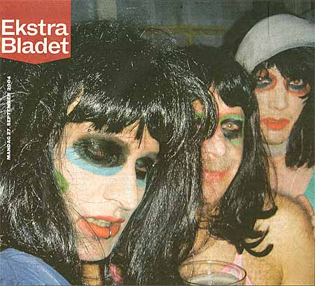
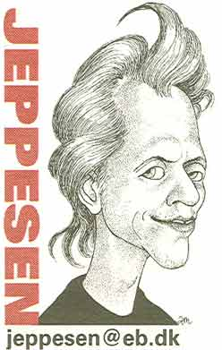

Dennis Agerblad with friends on the backside of the newspaper Ekstra Bladet, Copenhagen.
27/09 - 2004.

Dennis Agerblad, Søde Car O'lina & Miss Fish.
All dressed up as the dunst performer Puta.

PUHA PÅ GADEN
I anledning af et helt nyt livsstils-magasin "PUHA"
har Jeppesen været til stor fest.